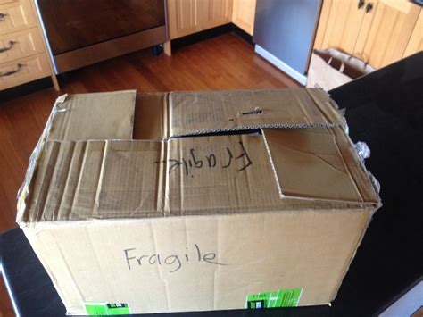

2022-07-20
Note: I’m not a mathematician, I’m just an amateur on math. These notes are just an attempt to try to sort the notes that I took while learning abut bLSAG.
bLSAG: Back’s Linkable Spontaneous Anonymous Group signatures
Let \(G\) be the generator of an EC group. We use a hash function \(\mathcal{H}_p\), which maps to curve points in EC, and a normal hash \(\mathcal{H}_n\), which maps to \(\mathbb{Z}_p\). Signer’s key pair: \(k_{\pi}\), s.t. \(K_{\pi} = k_{\pi} \cdot G \in \mathcal{R}\), with secret index \(\pi\). Set of Public Keys: \(\mathcal{R} = \{ K_1, K_2, \ldots, K_n \}\)
def new_key():
k = F.random_element()
K = g * k # g is the generator of the EC group
return K
compute key image: \(\tilde{K} = k_{\pi} \mathcal{H_p} ( K_{\pi}) \in G\)
key_image = k * hashToPoint(K)
Generate \(\alpha \in^R \mathbb{Z}_p\), and \(r_i \in^R \mathbb{Z}_p\), for \(i \in \{1, 2, \ldots, n \}\), with \(i \neq \pi\)
\(r_i\) is used for the fake responses
a = F.random_element()
r = [None] * len(R)
for i in range(0, len(R)):
if i==pi:
continue
r[i] = mod(F.random_element(), p)
Compute \(c_{\pi + 1} = \mathcal{H}_n ( m, [\alpha G], [\alpha \mathcal{H}_p(K_{\pi})])\)
c[pi1] = hash(R, m, a * g, hashToPoint(R[pi]) * a, p)
for \(i=\pi + 1, \pi +2, \ldots, n, 1, 2, \ldots, \pi -1\), calculate, replacing \(n+1 \rightarrow 1\) $\( c_{i+1} = \mathcal{H}_n (m, [r_i G + c_i K_i], [r_i \mathcal{H}_p (K_i) + c_i \tilde{K}]) \)$
for j in range(0, len(R)-1):
i = mod(pi1+j, len(R))
i1 = mod(pi1+j +1, len(R))
c[i1] = hash(R, m, r[i] * g + c[i] * R[i],
r[i] * hashToPoint(R[i]) + c[i] * key_image, p)
Define \(r_{\pi} = \alpha - c_{\pi} k_{\pi} \mod{p}\)
r[pi] = mod(a - c[pi] * k, p)
Signature: \(\sigma(m) = (c_1, r_1, \ldots, r_n)\), with key image \(\tilde{K}\) and ring \(\mathcal{R}\). - \(len(\sigma(m)) = 1+n\)
return [c[0], r]
You can scroll down the images through the step-by-step diagrams.
It reminds in some way to the approach to close a box like the one in the picture: 
check \(p \tilde{K} \stackrel{?}{=} 0\)
for \(i = 1, 2, \ldots, n\), replacing \(n+1 \rightarrow 1\) $\( c'_{i+1} = \mathcal{H}_n (m, [r_i G + c_i K_i], [r_i \mathcal{H}_p (K_i) + c_i \tilde{K}]) \)$
check \(c_1 \stackrel{?}{=} c'_i\)
c[0] = c1
for j in range(0, len(R)):
i = mod(j, len(R))
i1 = mod(j+1, len(R))
c[i1] = hash(R, m, r[i] * g + c[i] * R[i],
r[i] * hashToPoint(R[i]) + c[i] * key_image, p)
assert c1 == c[0]
Toy implementation:
Resources: